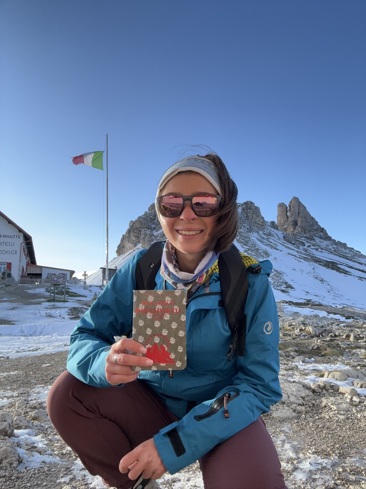
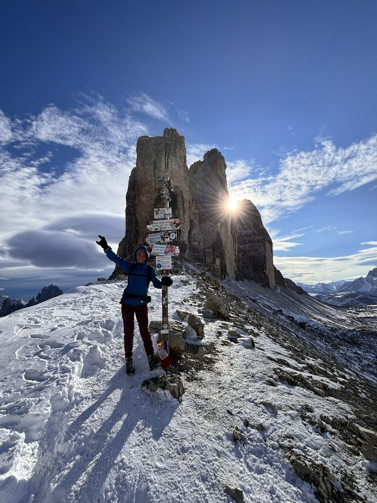
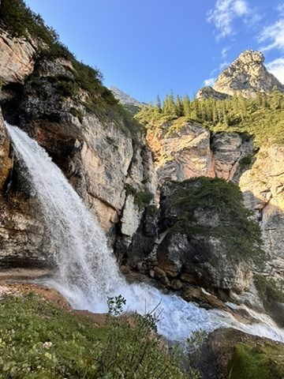
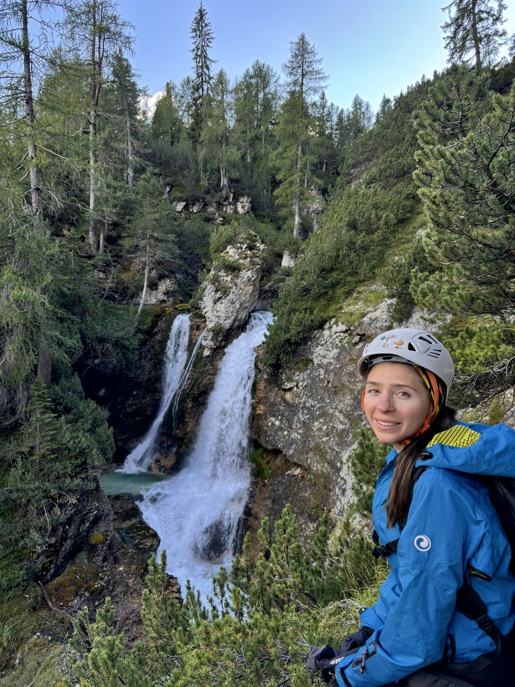
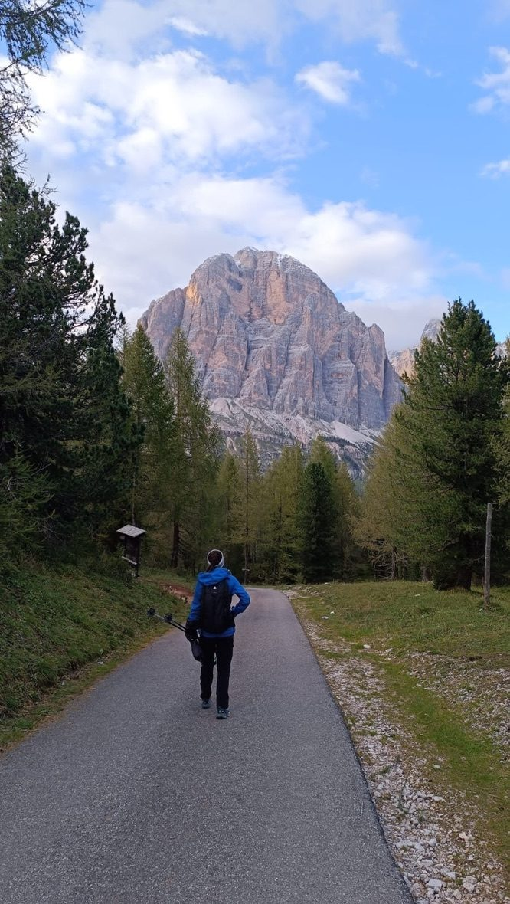
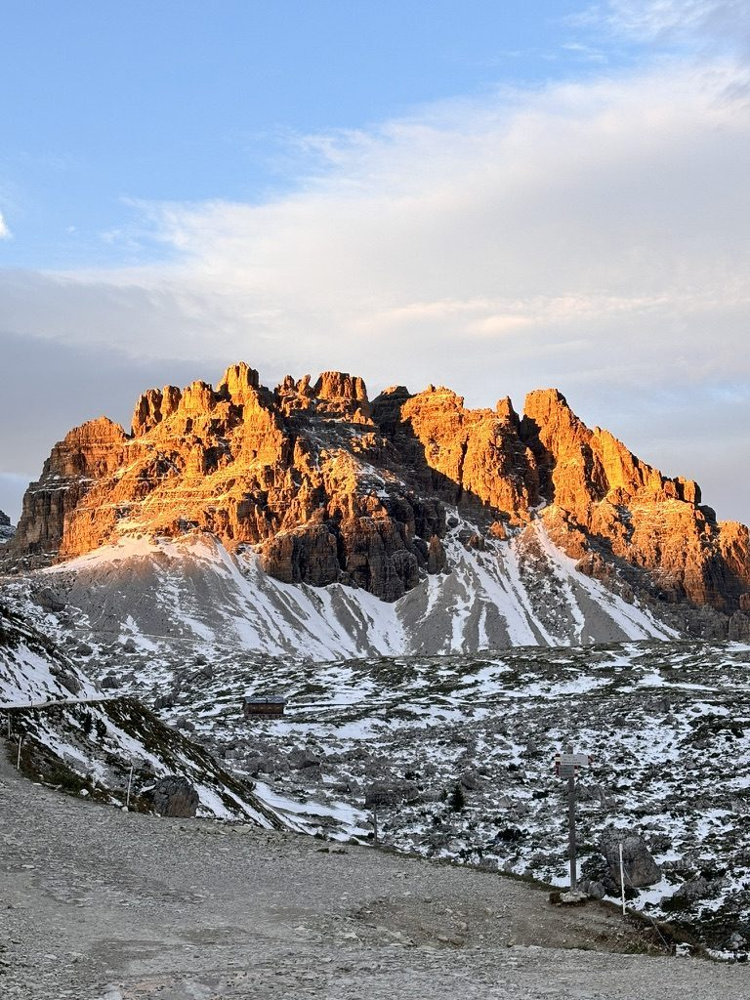

The Dolomites are not subtle. Every other mountain range I have hiked builds toward something — a view that reveals itself gradually, a summit that earns its panorama. The Dolomites announce themselves from the first moment. The rock is the wrong colour. The peaks are too vertical. The scale makes no architectural sense. You spend the first day just adjusting to the fact that they are real.
I went in late season — first snow already on the ridgelines, the rifugios preparing to close, the trails mostly empty. This is the version of the Dolomites I would recommend to anyone who asks. The crowds are gone. The colours are extraordinary. And the possibility of waking up to fresh snow on the peaks is not a problem — it's the whole point.
Cortina d'Ampezzo is the base for all of this. It is a beautiful, expensive mountain town that takes itself seriously. Good gear shops, excellent rifugio culture, and trails that start from the edge of town. Use it as a base and stay out of it as much as possible — the mountains are better than the town.
The hiking passport

The Dolomiti hiking passport. You get it stamped at rifugios along the way.
At some point someone will tell you about the Dolomiti hiking passport — a small booklet you collect from the tourist office and take with you to get stamped at mountain huts along each route. It sounds like a tourist gimmick. It is, a little. But it also gives you a reason to stop at every rifugio rather than just walk past, which means you end up drinking coffee in extraordinary places and talking to the people who run them — most of whom have been up here for decades and have opinions about the mountains that are worth hearing.
By the end of the week, the passport was full. Which meant I had been inside the rifugios that matter.
Lago di Sorapis loop — and the sign that surprised me

The trail junction. The peaks behind are unmistakable — even if you weren't expecting them here.
The Lago di Sorapis loop is consistently rated one of the most beautiful hikes in the Dolomites. The lake is turquoise-teal from glacial sediment, set below sheer vertical walls, completely out of proportion with anything around it. The trail involves a short via ferrata section — fixed cables on steep rock — which adds to the sense that you earned what you see at the end.
In late season, parts of the trail were under snow. The via ferrata section requires attention when wet or iced. Trekking poles help. Microspikes, if you're going after October, are not overkill.
At a junction on the route, the peaks appeared behind me — those unmistakable vertical towers that define this corner of the Dolomites. I had not been expecting them at that exact angle, in that light, with snow on the ground. I stopped. I put my arms up because there was nothing else to do with that feeling.
Tre Cime di Lavaredo circuit — the waterfall section

On the approach to Tre Cime. The rock is already doing things.
The Tre Cime circuit is the most famous walk in the Dolomites, possibly in all of Italy. You have seen the photographs. Three vertical towers of rock, 2,999 metres at the highest, rising from a plateau with no logical reason for being that shape or that height. The circuit around the base takes three to four hours and is genuinely not difficult — the altitude is the only challenge.
What the photos don't show is the approach, which is excellent. The route from the lower car park passes waterfalls pouring down orange rock faces, through sections of forest where the scale of the peaks above only becomes apparent gradually. This waterfall in particular stopped several of us mid-stride. The colour of the rock — a warm orange-pink that seems lit from inside — is something no filter achieves because it doesn't need one.
Lago di Braies — water, helmet on, waterfall

Lago di Braies. The waterfall on the loop trail. The helmet was for the via ferrata section.
Lago di Braies — Pragser Wildsee in German — is achingly beautiful and, in summer, achingly crowded. In October, with most of the tour buses gone, it returns to something closer to what it actually is: a deep green lake at the base of a vertical rock wall, with a trail that loops around it and then climbs above it via fixed cables into the higher terrain.
The helmet in the photo is for the via ferrata section above the lake. The waterfall is about 45 minutes into the loop, before the climbing starts. It was loud enough to drown out any other thoughts. Standing next to it, the cold air coming off the water, the smell of pine resin from the forest — that specific combination of sensory information that makes you feel, briefly, like your nervous system has been reset.
Nuvolau and Cinque Torri — the quieter loop

The Cinque Torri trail. The larch trees frame everything perfectly at this time of year.
The Nuvolau and Cinque Torri loop is less famous than Tre Cime and deserves more attention. The Cinque Torri — five rock towers — are smaller than Tre Cime but stranger, more irregular, surrounded by World War I trenches that have been preserved in place. Walking between the towers past preserved military positions from a hundred years ago adds a weight to the landscape that purely natural sites don't carry.
The larch trees in October are the reason the light looks like this. European larches turn yellow before they drop their needles — a short window when the forest around the Dolomites becomes something out of a painting. The dark rock, the yellow larches, the blue sky: it doesn't need to be arranged. It simply is.
The alpenglow, and the end of the day

Alpenglow above Cortina. The rock turns this colour for about eight minutes. Worth being outside for.
Alpenglow in the Dolomites is something you plan around. The pale grey rock becomes deep orange, then red, then fades to purple in the space of about fifteen minutes after sunset. If you're on the right ridge at the right moment, with the right angle to the peak, it looks unreal. Several times during the week I stopped mid-sentence or mid-step because the colour above me changed and demanded full attention.
The sky that stopped everything

I don't know how long I stood here. The sky was doing something I have never seen before or since.
On the last evening of the trip, the sky went wrong in the best possible way.
I was descending from the day's hike, on a snowy mountain road with the valley below and the ridgeline to my right. The cloud that had been building all afternoon started to catch the last light from below, and over about ten minutes it turned from white to gold to orange to something closer to fire — violent red and deep purple across the entire sky, while the snow on the ground reflected it back from below.
I stopped walking. I stood in the middle of the path and just watched it happen. There was nobody else on the trail. Just the sky, the snow, the sound of the wind, and whatever this was.
The Dolomites do this. They set the scale so high that ordinary mountain experiences feel significant, and then occasionally they do something like this — something that has no precedent and no adequate description — just to remind you why you keep coming back to places that are hard to reach.
I will come back.
Practical notes
- Base: Cortina d'Ampezzo is the most convenient hub — all five hikes are within 30–60 minutes by car or bus
- Season: Late September to mid-October is the sweet spot — crowds gone, larch colours peak, first snow possible above 2,000m
- Gear: Microspikes essential from October; trekking poles strongly recommended on all routes; via ferrata harness + helmet for Lago di Braies and Sorapis
- Rifugios: Most close mid-October — check before you go. Some stay open into November with reduced service
- Hiking passport: Pick up at the Cortina tourist office or at Rifugio Auronzo near Tre Cime
- Tre Cime access road: Paid toll in season; the road to Rifugio Auronzo closes with heavy snow — check conditions